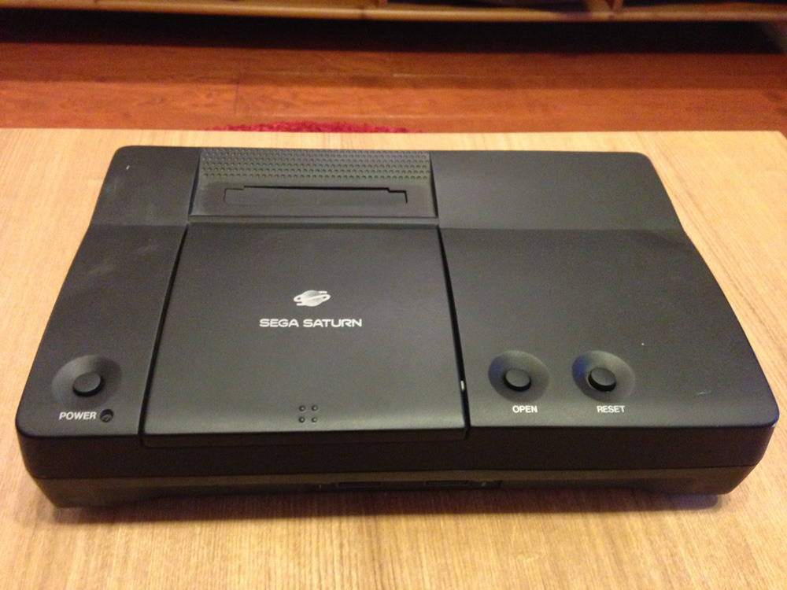
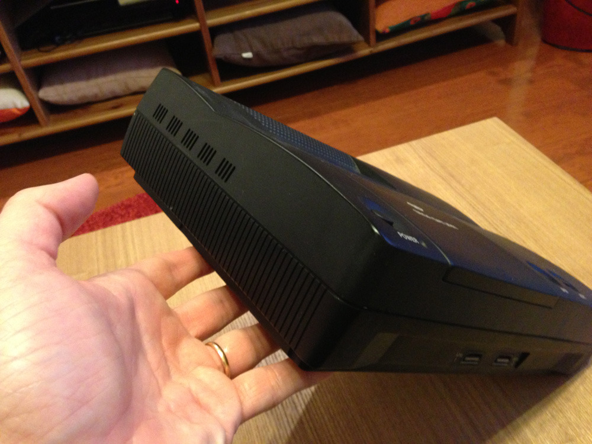
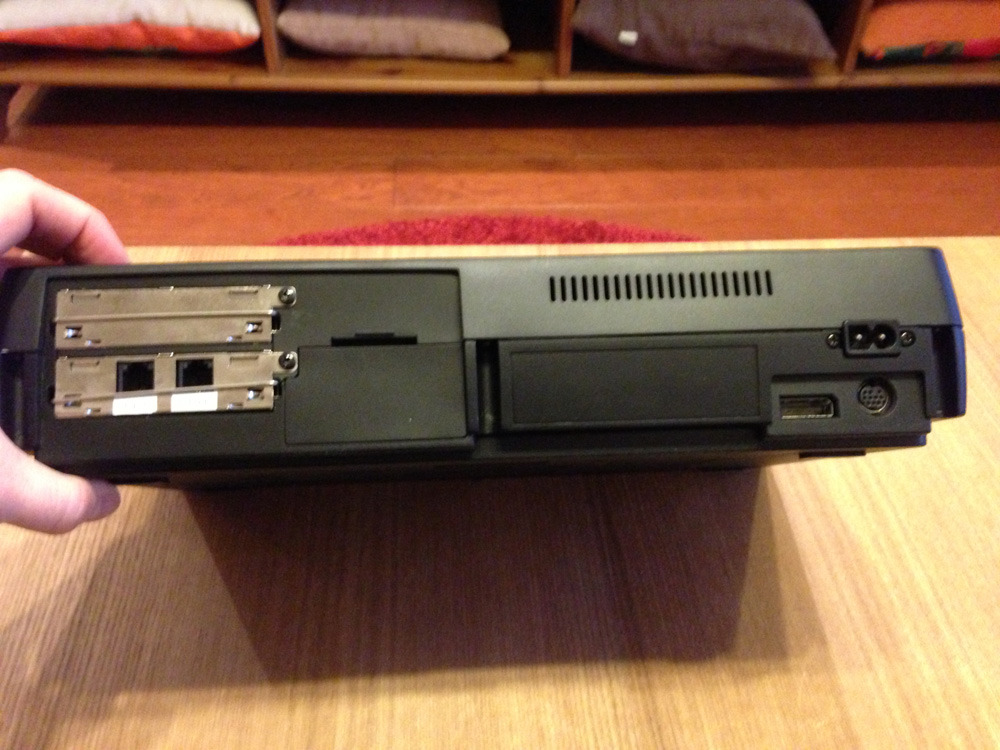
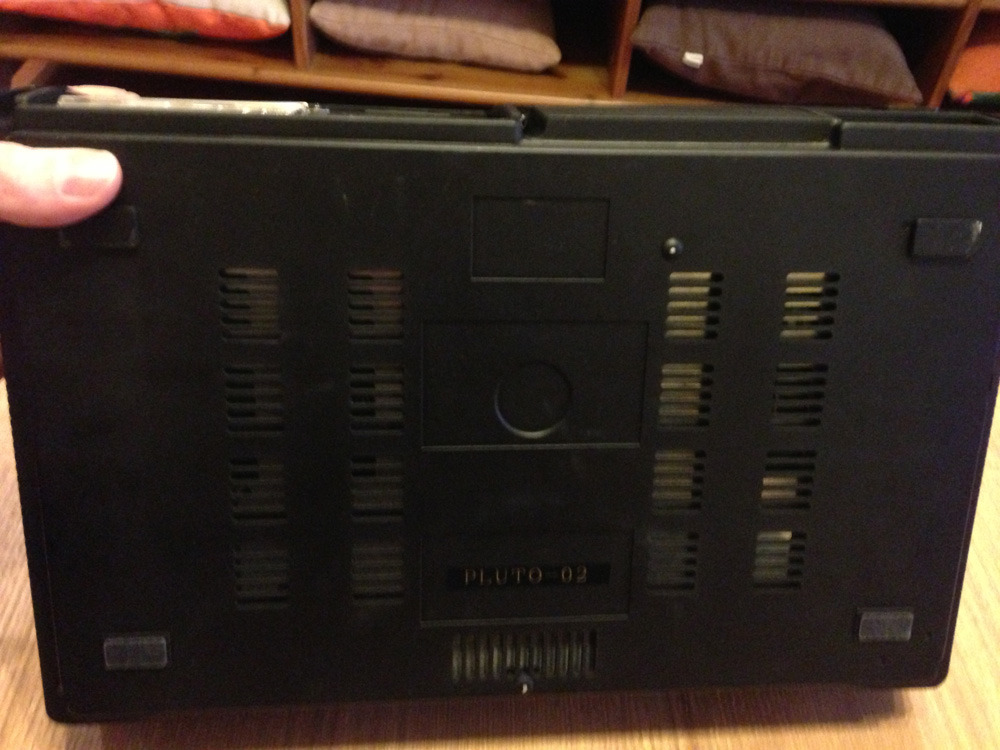
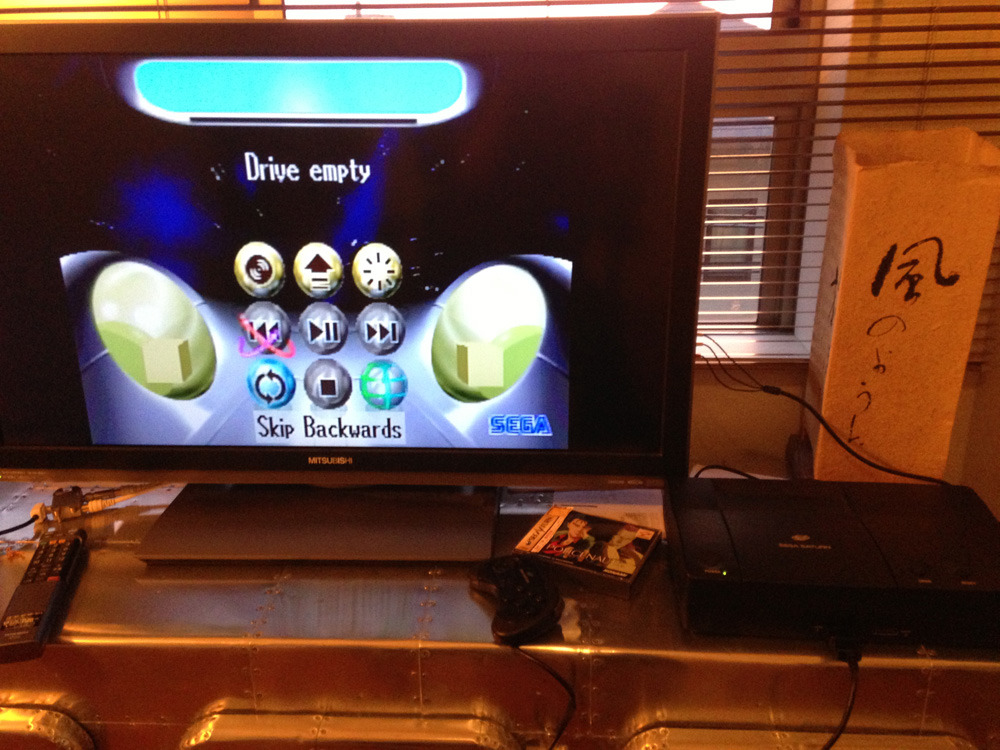

Sega’s former prototype console - the Sega “Pluto”
The above images are rumored to be that of Sega’s former prototype console, the Sega Pluto.
The uploader claims it to be one of only two ever built, citing that the model seems to be more of a heavily modified Sega Saturn with an optical drive and NetLink connection built in, to name but a few of the differences between it and the Saturn.
Check out the original post in the link below to judge for yourself.